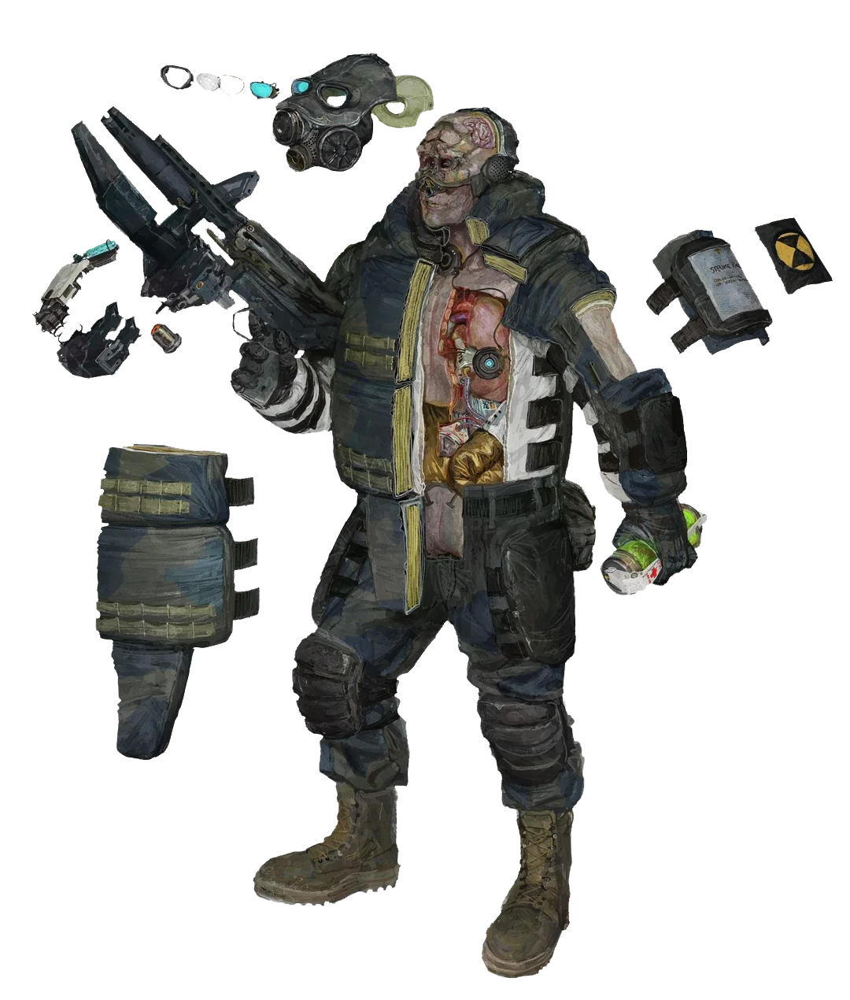
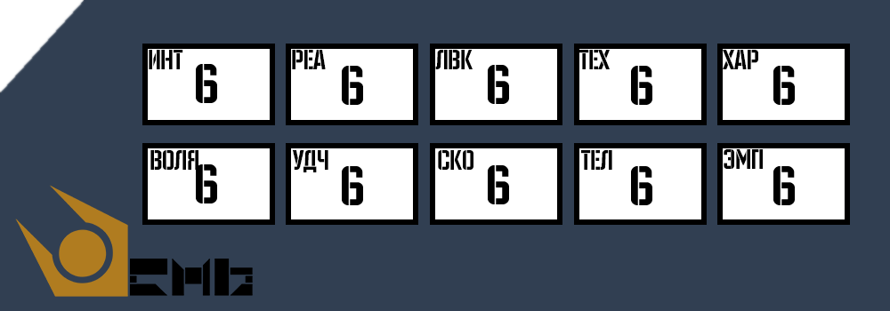
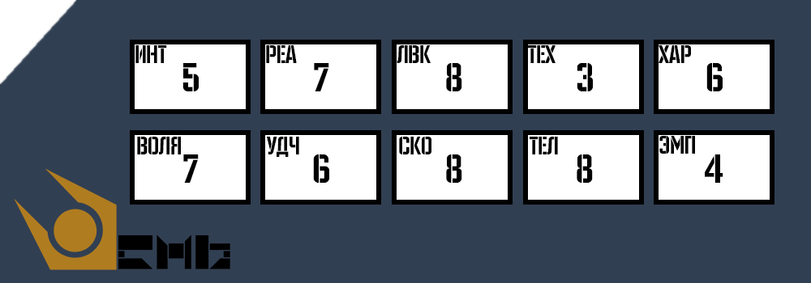

Как правильно раскидать характеристики?
Можно раскидать характеристики двумя способами
1. Бездумная картошка
2. Кросвордик
В первом вам может помочь только бог рандома. Во втором же вы сами можете подумать какие характеристики вам и вравду нужны

Бездумная картошка
Пока что нету т.к не прописаны классы
Кросвордик
Этот метод позволяет создать персонажа с нуля, используя пул «очков персонажа» для «покупки» характеристик. Хотя это самый гибкий способ, он требует больше всего времени и на нем нужно ДУМАТЬ.
При использовании метода «Кросвордик» ваш мастер игры (ГМ) выдаст вам определённое количество очков для определения СТАТов вашего персонажа (обычно 62). Единственное ограничение — ни один СТАТ не может быть выше 8 или ниже 2.

И вот как будет примерно выглядеть после раскидывания характеристик:

Таблички и т.п дописано будет позже